Learning AI
Studying CS with a focus on machine learning and data science — and keeping up with everything new.
// hello, I'm
CS student
Data science & AI, built in the flow and usually by moonlight. Away from the screen, I'm behind a camera.
Hey, I'm Ryuu — a computer science student from Italy, deep into data science & AI.
I learn by building: small tools, web projects, experiments with models. I call it vibe coding — shipping fast, staying in the flow, learning as I go.
When I'm not staring at a terminal, you'll find me chasing light with a camera or deep into some anime.
const ryuu = {
role: "CS student",
focus: ["data science", "AI"],
vibe: "vibe coding",
offline: ["photography", "anime"],
from: "Italy",
};Studying CS with a focus on machine learning and data science — and keeping up with everything new.
Web projects and small AI experiments, shipped fast and improved in the open.
Chasing light and night skies when I'm away from the keyboard.


Public repositories, pulled live from GitHub.
I post everything I build on GitHub. A follow takes one click — and it makes my night.
Follow @f3ri7